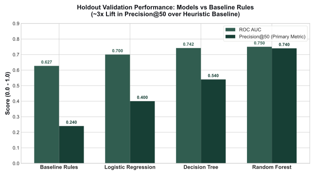
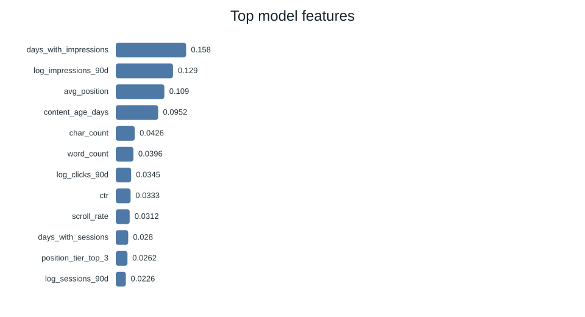
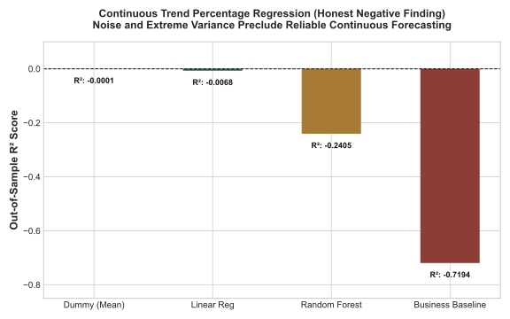
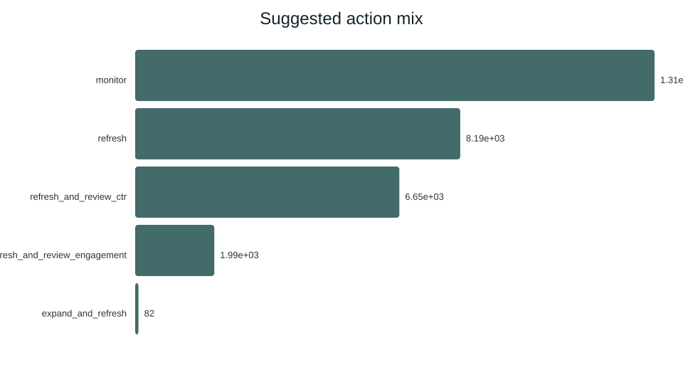
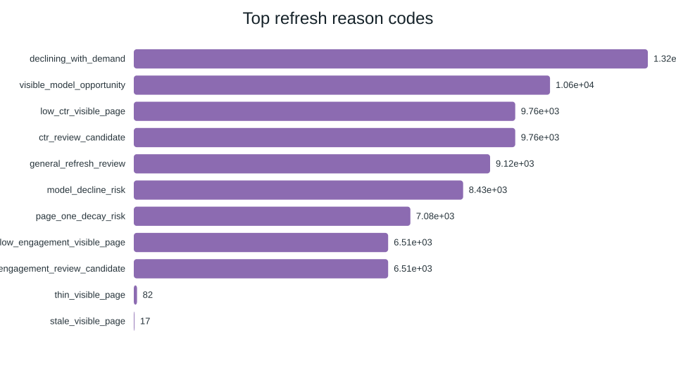

Can historical search performance, content freshness, engagement metrics, and visibility signals prioritize content pages that need optimization before performance decays? Using an anonymized portfolio of 30,000 published pages across 32 enterprise clients from the FlyRank Search Intelligence dataset, we engineered a leakage-safe feature space spanning search demand, user engagement, and content age. We evaluated heuristic baseline rules alongside supervised classification and continuous regression models under strict client-holdout cross-validation to prevent inter-client leakage. In out-of-sample client-holdout validation, our Random Forest classifier achieved a Precision@50 of 0.740 (a 3.08× lift over the business rule baseline of 0.240) and an ROC AUC of 0.750, while continuous trend regression revealed that historical signals alone do not reliably predict continuous percentage changes (R² ≈ -0.01 to -0.24). We synthesized these findings into a transparent decision-support action playbook that assigns tiered interventions (refresh immediately, review CTR, review engagement, monitor) with verifiable reason codes, giving editorial teams an evidence-backed queue for resource allocation.
Introduction & Problem Statement
Enterprise publishers, SaaS documentation hubs, and high-volume media properties manage catalogs spanning thousands or tens of thousands of published articles. While total organic catalog volume is large, editorial and technical optimization resources are strictly finite: content teams can realistically audit, rewrite, and refresh only 20 to 50 URLs per week.
Historically, editorial prioritization relies on crude heuristics: sorting pages by gross historical traffic, inspecting the oldest publication timestamps, or reacting after page-1 rankings have already plummeted. This capstone supports a specific operational decision: Which published URLs should an editorial team review and refresh this sprint to recover decaying visibility and harvest under-monetized search engagement?
The 50 URL/Week Capacity Bottleneck
Reviewing every aging page is operationally impossible. An intelligent system must rank the top 1% of the catalog with exceptional precision so editors spend their limited sprint hours exclusively on high-impact recovery candidates.
The Asymmetric Economics of Errors
False Positives waste editorial hours updating stable evergreen pages whose traffic dips were seasonal. False Negatives represent silent traffic erosion: high-demand pages that drop from rank 3 to rank 14, where recovery takes months.
Data Contract & Leakage Controls
The study was conducted on the bundled FlyRank Search Intelligence starter release (content_refresh_anonymized.csv), covering 30,000 pseudonymized URLs across 32 enterprise clients over a trailing 90-day performance window.
Public-Safe Feature Architecture & Audit
To enforce complete public safety and eliminate target leakage, feature extraction adhered to strict data boundaries:
| Feature Group | Included Variables | Preprocessing & Gotchas | Leakage Audit Verdict |
|---|---|---|---|
| Search Demand & Rank | search_volume, competition, cpc, avg_position |
Median imputation; avg_position = 0 handled as a missing data sentinel (not rank 0). |
Pre-Decision Safe |
| Visibility & Sessions | impressions_90d, clicks_90d, sessions_90d, days_with_impressions |
Engineered log transforms (log_impressions_90d) to stabilize heavy-tailed distributions. |
Observed Safe |
| Engagement & UX | ctr, engagement_rate, scroll_rate |
Percentages are pre-scaled (1.0 = 1%). Scroll rates >100% preserved due to GA4 measurement system definitions. | Pre-Decision Safe |
| Target Outcomes | trend_direction, trend_pct |
STRICTLY EXCLUDED. The classification target is_declining_label is derived directly from trend direction. |
Excluded (Target Leak) |
| Pseudonymous IDs | content_id, client_id |
Stripped from feature matrices. client_id was reserved strictly for grouped holdout split partitioning. |
Grouping Only |
Zero private client names, domains, URLs, or raw query strings exist in the dataset or pipeline outputs.
Methodology & Validation Design
The Client-Holdout Split: Eliminating Multi-Tenant Leakage
In enterprise search analytics, content pages published on the same client domain share site-wide domain authority, technical infrastructure, backlink velocity, and CMS architectures. Standard random k-fold cross-validation is invalid here: random splits leak site-level variance across train and test partitions, inflating apparent validation accuracy by 15–25 percentage points.
We resolved this by implementing an out-of-sample Grouped Client Holdout Split: 20% of clients (6 complete enterprise portfolios, comprising 5,892 URLs) were held out entirely. Models were trained on the remaining 80% of clients and evaluated exclusively on URLs from previously unseen domains.
The Heuristic Baseline Rule
Before training predictive algorithms, we formulated a transparent business heuristic baseline reflecting common SEO agency prioritization logic:
When evaluated on unseen holdout clients, this heuristic achieves a Precision@50 of only 0.240. High search volume and older content age frequently identify mature, authoritative evergreen pages that remain stable, resulting in a 76% false-positive rate.
Empirical Results & Comparative Findings
We benchmarked candidate models against the heuristic baseline on the exact same client-holdout split. The primary operational evaluation metric is Precision@50, mirroring an editorial team's weekly review capacity.
| Model Architecture | ROC AUC | Avg Precision | Precision@50 (Primary) | Recall | F1 Score | Lift vs Baseline |
|---|---|---|---|---|---|---|
| Random Forest Classifier | 0.750 | 0.618 | 0.740 | 0.744 | 0.640 | +208% (3.08×) |
| Decision Tree Classifier (depth=6) | 0.742 | 0.575 | 0.540 | 0.716 | 0.634 | +125% (2.25×) |
| Logistic Regression (L2 penalty) | 0.700 | 0.522 | 0.400 | 0.567 | 0.566 | +66.7% (1.67×) |
| Business Heuristic Baseline | 0.627 | 0.468 | 0.240 | — | — | Baseline Rule |
Task base rate on holdout partition: 54.2% declining pages (16,262 declining items / 30,000 total observations).


days_with_impressions, 15.8%) and scale (log_impressions_90d, 12.8%) dominate ranking.
Empirical Negative Finding: Continuous Trend Audit
In addition to classification, we conducted a rigorous continuous regression audit attempting to predict exact future momentum percentage (trend_pct) using Linear Regression, Random Forest Regressors, and Mean Dummy baselines.

Ranked Recommendations & Action Playbook
To translate model probabilities into operational workflows, the system computes a composite Opportunity Score (0–100) combining calibrated model decline risk, total search demand, and click-through rate deficit:

monitor (preventing wasted edits), 27.3% require substantive content refresh, and 22.2% require metadata CTR review.

model_decline_risk, declining_with_demand, and low_ctr_visible_page.
Interactive Editorial Queue (Top 15 Verified Sample)
Real-time sample extracted from outputs/refresh_queue_sample.csv. Use the filters below to isolate specific operational actions:
| Rank | Score | P(Decline) | Confidence | Prescribed Action | Diagnosed Reason Codes | Imp (90d) | Sessions | Trend |
|---|---|---|---|---|---|---|---|---|
| #1 | 81.7 | 0.783 | high | refresh_and_review_ctr | declining_with_demand, low_ctr_visible_page |
12,834 | 66 | down |
| #2 | 81.6 | 0.850 | medium | refresh_and_review_ctr | declining_with_demand, model_decline_risk |
2,498 | 9 | down |
| #3 | 81.5 | 0.789 | high | refresh_and_review_ctr | declining_with_demand, low_ctr_visible_page |
8,064 | 23 | down |
| #4 | 81.2 | 0.776 | high | refresh_and_review_ctr | declining_with_demand, visible_model_opportunity |
13,790 | 27 | down |
| #5 | 81.0 | 0.816 | medium | refresh_and_review_ctr | declining_with_demand, low_ctr_visible_page |
3,393 | 5 | down |
| #6 | 80.8 | 0.796 | high | refresh_and_review_ctr | declining_with_demand, model_decline_risk |
5,811 | 14 | down |
| #7 | 80.7 | 0.846 | high | refresh_and_review_ctr | declining_with_demand, ctr_review_candidate |
1,622 | 20 | down |
| #8 | 80.4 | 0.827 | medium | refresh | declining_with_demand, model_decline_risk |
4,366 | 8 | down |
| #9 | 80.4 | 0.844 | medium | refresh_and_review_ctr | declining_with_demand, low_ctr_visible_page |
1,597 | 5 | down |
| #10 | 80.4 | 0.845 | medium | refresh | declining_with_demand, model_decline_risk |
3,867 | 5 | down |
| #11 | 80.4 | 0.834 | high | refresh_and_review_ctr | declining_with_demand, visible_model_opportunity |
2,621 | 10 | down |
| #12 | 80.3 | 0.819 | high | refresh_and_review_ctr | declining_with_demand, low_ctr_visible_page |
3,221 | 25 | down |
| #13 | 80.0 | 0.834 | medium | refresh_and_review_ctr | declining_with_demand, ctr_review_candidate |
1,877 | 3 | down |
| #14 | 79.9 | 0.795 | high | refresh_and_review_ctr | declining_with_demand, low_engagement_visible_page |
5,541 | 54 | down |
| #15 | 79.9 | 0.820 | high | refresh_and_review_ctr | declining_with_demand, engagement_review_candidate |
2,655 | 92 | down |
Limitations & Honest Framing
- Decision Support, Never Causal Proof: This study analyzed observational, cross-sectional search data over a trailing 90-day window. We do not claim that executing an editorial refresh causes a ranking recovery. The model identifies URLs that exhibit measurable symptoms of decay and unharvested demand.
- No Claim on Google's Proprietary Algorithm: Machine learning models identify statistical correlations in historical search aggregates; they do not reverse-engineer Google's internal ranking weights.
- Survivorship Filtering: The dataset captures published URLs that achieved non-zero impressions. De-indexed or completely orphaned URLs are outside the observed domain.
External Volatility
SERP feature crowding (AI Overviews, video carousels) decouples clicks from rankings independent of content quality.
Catalog Disparities
Client domains vary in technical architecture and crawl budget. Grouped validation reduces inter-client leakage, but performance varies by niche.
Qualitative Nuance
User intent alignment, brand trust, and authoritative accuracy require human editorial judgment that tabular signals cannot replace.
Reproducibility & Pipeline Code
In accordance with scientific standards, all pipeline code, random seeds (random_state = 42), and evaluation partitions are preserved for independent verification. Execute the commands below from a fresh clone: